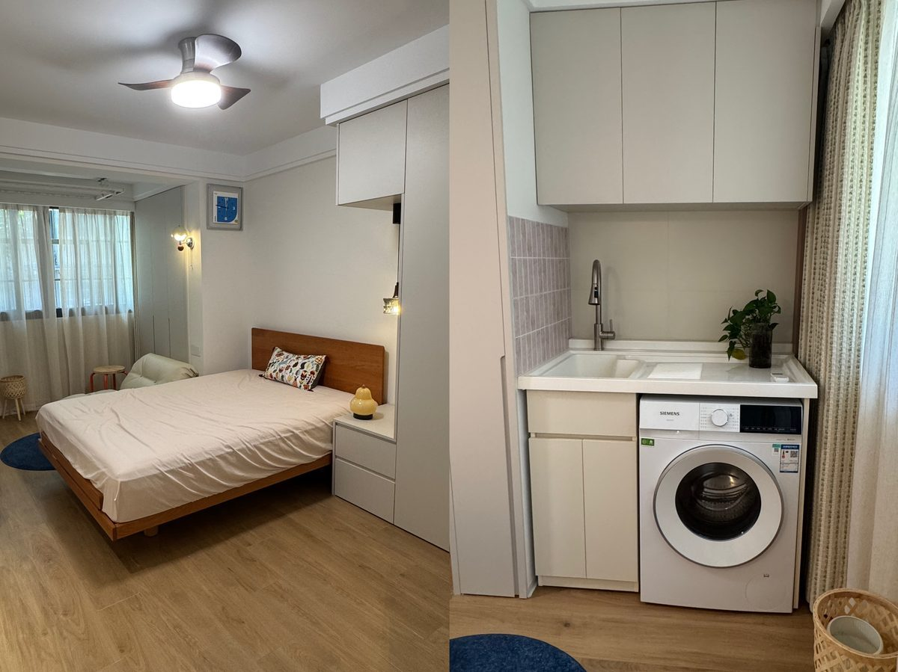
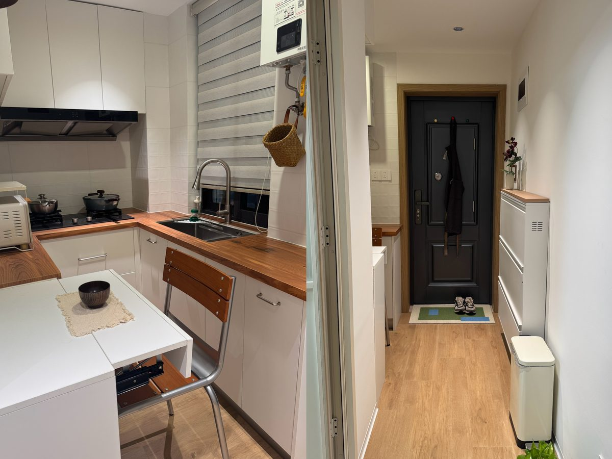
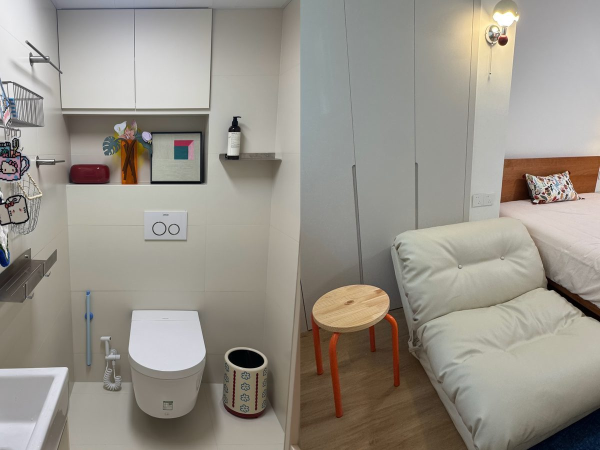

← 左右滑动看 3 张 →庆春坊 32㎡ 老破小极限爆改 · 单身独居女生的梦中情屋
32㎡ · 一镜到底 · 日系奶油 · 极限收纳
在杭打拼的独居女孩，想要一个温馨有质感的小窝，不凑合、不将就。
原本隔墙林立、过道窄得只够侧身，厨房和卫生间挤在一起。我们拆掉了所有非承重隔墙，把空间全部打通，用半高矮柜、玻璃隔断和地面材质的自然过渡来划分功能区域。整体走日系奶油风——藤编、亚麻、原木元素贯穿全屋。原本的暗卫借了卧室的光线，装了长虹玻璃推拉门，厨房做成开放式一字型，台下收纳充足，一人食也很方便。
32㎡ 装出了 60㎡ 的居住体验，进门视线直接穿透整个空间，真正的一镜到底、一览无余。
原本隔墙林立、过道窄得只够侧身，厨房和卫生间挤在一起。我们拆掉了所有非承重隔墙，把空间全部打通，用半高矮柜、玻璃隔断和地面材质的自然过渡来划分功能区域。整体走日系奶油风——藤编、亚麻、原木元素贯穿全屋。原本的暗卫借了卧室的光线，装了长虹玻璃推拉门，厨房做成开放式一字型，台下收纳充足，一人食也很方便。
32㎡ 装出了 60㎡ 的居住体验，进门视线直接穿透整个空间，真正的一镜到底、一览无余。
"以前觉得32平只能凑合，现在每天推开门都像走进杂志里。" —— 业主 小沈